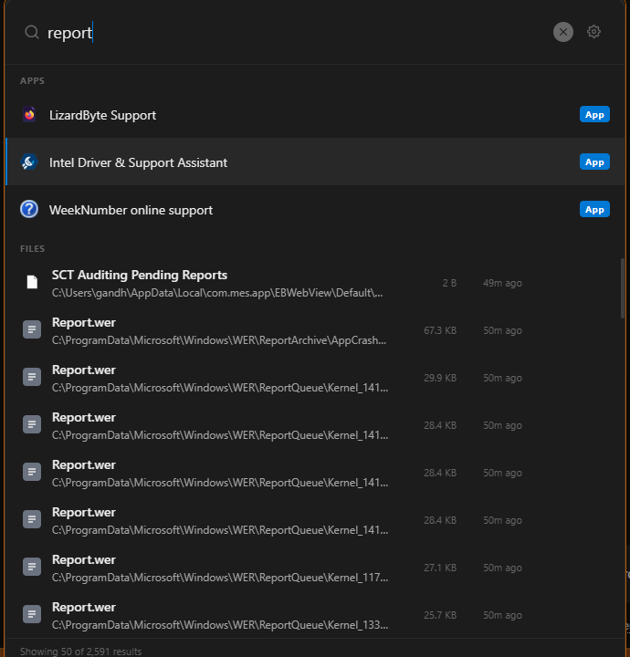
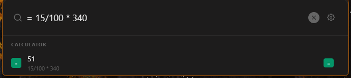
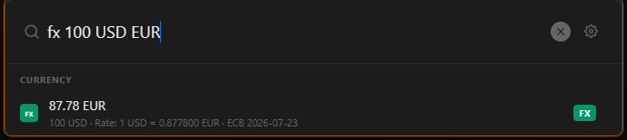
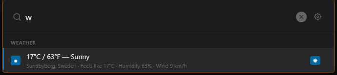
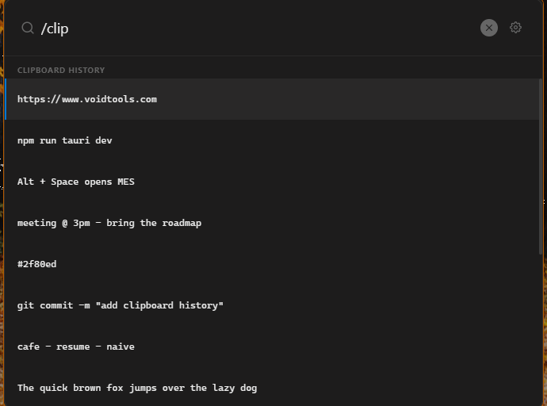
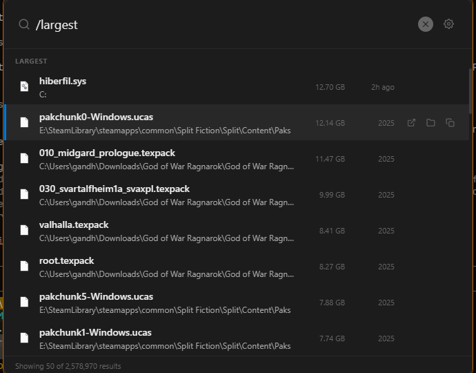

MES — My Everything Search
A Windows thing has been made (for me, maybe for you). It's a launcher to search for stuff on your PC. You press Alt + Space, type, and it finds files before you finish typing. There may be bugs.
Why? Why not? Everything (the search engine MES is built on) is absurdly fast, but I wanted some extra tricks ontop.
I am aware other launchers exist, but this one is mine.

What it does
- Type anything → instant file search. Thanks once again to Everything by David Carpenter.
= 15/100 * 340→ inline calculator, Enter to copy.worw Gothenburg -3day→ weather, very nice. (WIP, there are bugs yet) (from wttr.in)fx 100 USD EUR→ currency conversion with live ECB rates. (from frankfurter.app)r steam→ find and launch installed apps.cor/clip(or just press ↓ on an empty box) → your Windows clipboard history. Enter to paste it straight back where you were, Delete to forget it./largest→ the 50 biggest files hogging your disk./ai find invoices from last month→ plain-English file search, running entirely on your own machine. If you don't like AI that's fine. It never activates unless you explicitly install it
There's also a plugin system (using Javascript) to add your own
/command.

= — a calculator that follows you around.
fx — live currency conversion.
w — weather, wherever you are.
/clip — everything you've copied.
/largest — find what's eating your disk.What it doesn't do
It doesn't do a lot of things.
Want to try it out?
Soon. I'm putting the finishing touches on the installer and will host it here shortly — free to use, with a tip jar if you feel like buying me a coffee. Check back in a bit.
AI Disclaimer
I have used Anthropic's Claude to assist in the development of this project.